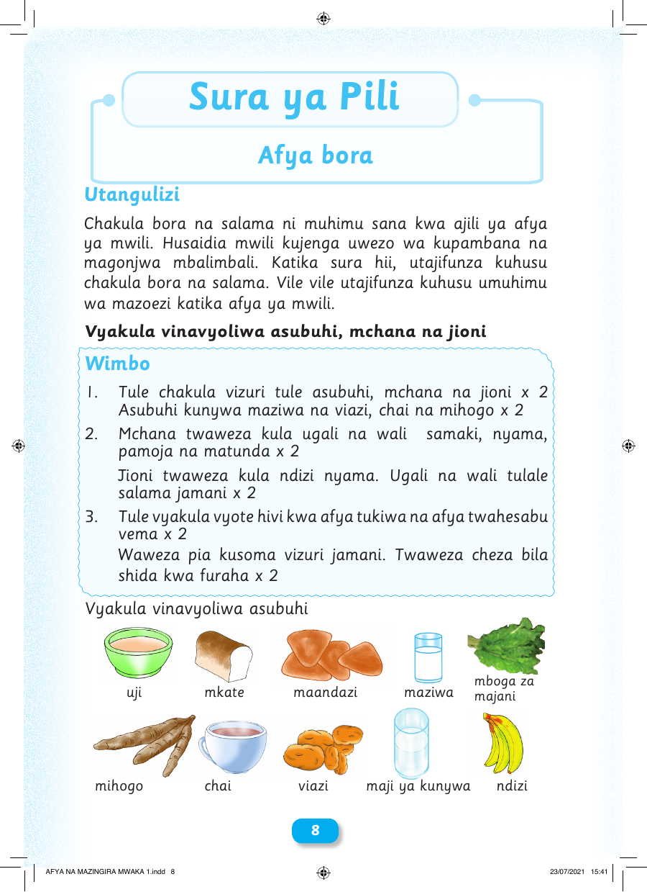

Sura ya Pili Afya bora Utangulizi Chakula bora na salama ni muhimu sana kwa ajili ya afya ya mwili. Husaidia mwili kujenga uwezo wa kupambana na magonjwa mbalimbali. Katika sura hii, utajifunza kuhusu chakula bora na salama. Vile vile utajifunza kuhusu umuhimu wa mazoezi katika afya ya mwili. Vyakula vinavyoliwa asubuhi, mchana na jioni Wimbo 1. Tule chakula vizuri tule asubuhi, mchana na jioni x 2 Asubuhi kunywa maziwa na viazi, chai na mihogo x 2 2. Mchana twaweza kula ugali na wali samaki, nyama, pamoja na matunda x 2 Jioni twaweza kula ndizi nyama. Ugali na wali tulale salama jamani x 2 3. Tule vyakula vyote hivi kwa afya tukiwa na afya twahesabu vema x 2 Waweza pia kusoma vizuri jamani. Twaweza cheza bila shida kwa furaha x 2 Vyakula vinavyoliwa asubuhi mboga za uji mkate maandazi maziwa majani mihogo chai viazi maji ya kunywa ndizi 8 AFYA NA MAZINGIRA MWAKA 1.indd 8 23/07/2021 15:41